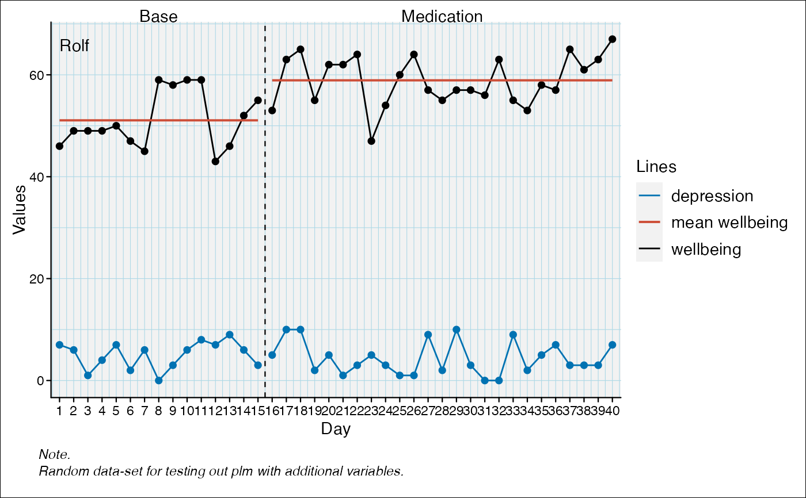
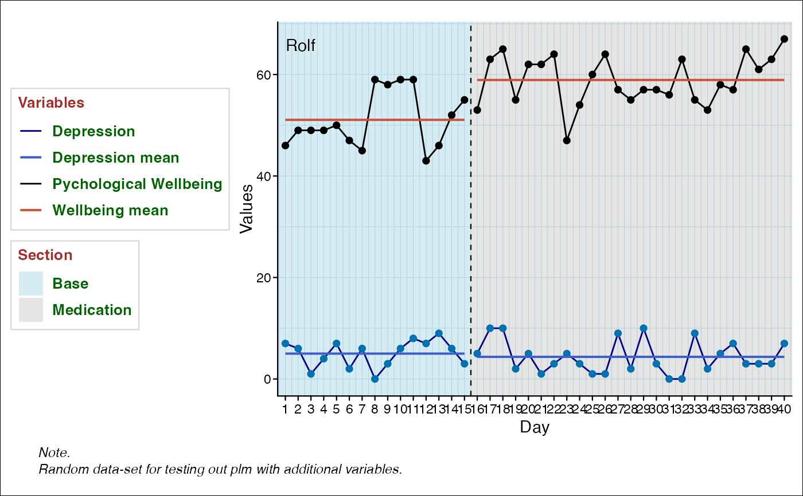

add_legend.RdAdd a legend to an scplot
add_legend(
object,
labels = NULL,
section_labels = c("Lines", "Phases"),
case = 1,
position = "right",
datalines = TRUE,
statlines = TRUE,
phases = TRUE,
title = NULL,
text = NULL,
background = NULL
)An scplot object (class scplot) returned from the scplot()
function.
A Character vector with text labels.
A character vector of length two. The labels for the lines section and phase section.
Numerical vector with the case number or character string. case = "all" for all cases.
The position ("none", "left", "right", "bottom", "top", or two-element numeric vector)
If TRUE, a legend for the datalines is generated.
If TRUE, a legend for the statlines is generated.
If TRUE, a legend for the phases is generated.
Note that you also have to set the set_panel argument
(e.g., set_panel(fill = c("lightblue", "grey80"))).
A list with text style parameters for the title.
List with text parameters ("family", "face", "colour", "size", "hjust", "vjust", "angle", "lineheight", "margin"). See element_text().
A list with background styling arguments (fill, color, size, linetype).
An object of class scplot (seescplot()) with changed element
legend.
data(exampleAB_add, package = "scan")
scplot(exampleAB_add) |>
set_dataline("depression") |>
add_statline("mean") |>
add_legend()

scplot(exampleAB_add) |>
set_dataline(label = "Pychological Wellbeing") |>
set_dataline("depression", color = "darkblue", label = "Depression") |>
add_statline("mean", label = "Wellbeing mean") |>
add_statline("mean", variable = "depression", label = "Depression mean") |>
set_phasenames(color = NA) |>
set_panel(fill = c("lightblue", "grey80")) |>
add_legend(
position = "left",
section_labels = c("Variables", "Section"),
title = list(color = "brown", size = 10, face = 2),
text = list(color = "darkgreen", size = 10, face = 2),
background = list(color = "lightgrey")
)
